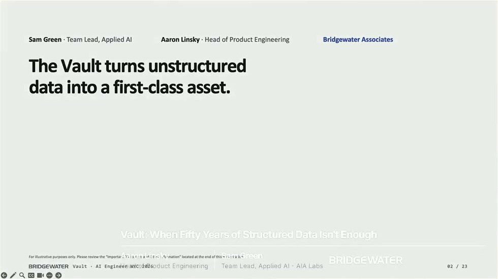

Unstructured text needed the same ontology as time-series data
For most of Bridgewater's history, studying how economies work meant building time-series models over structured tabular data. That data was cleaned and mapped onto the firm's internal ontology so researchers could test ideas across decades of market history. When language models made it practical to work with news, research reports, policy documents, and internal firm debates that had previously vanished into conversation, Green's team concluded that raw text needed the exact same treatment.
No external vendor offered the governance and point-in-time control required for both live daily questions and systematic historical study, so Bridgewater built Vault in-house. The platform holds more than 100 million documents, adding thousands more minute by minute from 135 external sources alongside internal memos and meeting transcripts. Rather than dumping raw files onto analysts' desks, ingestion enriches every document against Bridgewater's ontology: countries, concepts, markets, and the specific time period discussed inside the text.

“It is carefully aligned to our internal ontology with enrichments like the countries, concepts, markets, and most importantly, time period discuss in the document.”00:00:00
- Bridgewater built Vault after finding no vendor platform could govern unstructured text for both point-in-time questions and historical research.
- Vault indexes over 100 million documents from 135 external feeds plus internal memos and debate transcripts.
- Every document is tagged with countries, concepts, markets, and the time period discussed.
Evidence: transcript 00:00:00 · watch the ontology walkthrough
A three-month-old broker note fails a live currency question
Green illustrates why generic web search falls short with a question he ran in early October 2026: how AI infrastructure investment is affecting the Korean won, and whether market participants expect the trend to continue. On a standard enterprise chat plan connected to the open web, the model scanned 15 pages, leaned on just one or two of them, and admitted at the end of its answer that it lacked enough sources to establish a market consensus. Inspecting the citations exposed a worse flaw: the main broker note behind the answer had been published back on July 23, 2026, nearly three months earlier.
Running the exact same prompt and model against Vault changed the retrieval behavior first. The Vault connector nudged the agent to scope its search to a concrete window (October 1 to October 8 on the slide), pulling 52 relevant candidate documents across three targeted queries and grounding its synthesis in seven current sources instead of one stale note. Model capability was identical; data coverage and time-aware connectors decided whether the answer was usable.
“One of the notes that it primarily drew on to answer my question was published way back in July 2026, even though I asked this question and captured this answer just at the end of last week in early October.”00:02:20
- An open-web chat agent answered an October currency question using a July 2026 broker note and admitted it could not establish consensus.
- Connected to Vault, the same LLM restricted its query to early October, matched 52 candidates, and cited seven current sources.
- Time-scoped metadata and domain connectors mattered more than swapping models.
Evidence: transcript 00:02:20 · watch the Korean won demo
Humans read 300 words a minute; agents read 30,000
Once Vault held the corpus, Aaron Linsky's product engineering team ran into a structural tension: they were building one search engine for two opposite kinds of readers. A fast human investor reads roughly 300 words per minute and tolerates very little noise. Across 300 internal users, human traffic amounts to roughly 100 queries an hour, and analysts spend minutes reading each document they open.
Agents sit at the other extreme. They read roughly 30,000 words per minute, a hundred times faster than people, and care far more about recall than top-ten tidiness because they will attend to whatever context they are handed. Their query load also jumps by orders of magnitude, sustaining 100-plus queries per second and spiking into the thousands during multi-agent storms. Serving both audiences from a single system meant solving five dimensions at once: recall, precision, filtering, entitlements, and scale.
“They scale super quickly, and they come and they consume about a hundred times faster, thirty thousand words per minute.”00:05:00
- Human analysts read around 300 words per minute at 100 queries per hour and demand high top-ten precision.
- Agents consume 30,000 words per minute, prioritize recall, and burst past 1,000 queries per second in agent storms.
- One platform had to satisfy five dimensions together: recall, precision, filtering, entitlements, and scale.
Evidence: transcript 00:05:00, 00:06:23 · watch the human vs. agent comparison
Two hundred hand-labeled queries and cluster-local vector filtering
After data and legal teams populated the repository, the top user complaint was blunt: Vault search was bad. Rather than tuning blindly, Linsky's team spent less than a week building a ground-truth benchmark by hand, pairing roughly 200 real investment questions with their best documents, including decoy documents that looked topical on the surface but said little. Baseline precision at ten came back at 60%, confirming the complaints; five iterations culminating in agentic search pushed precision at ten to roughly 95%.
Production traces then exposed a performance wall: almost every real query carried a metadata condition such as a date window, source, or asset class. Standard vector post-filtering searched the vector index first and filtered metadata second, which stayed fast at the cost of weak recall whenever globally similar chunks missed the narrow filter. Pre-filtering flipped the order for strong recall, but scoring distances across every matching document bogged down under load. Bridgewater moved to turbopuffer's cluster-local native filtering, which inspects only the nearest vector clusters for filter matches and scores just those candidates, combining post-filter speed with near pre-filter recall at agent-storm scale.
“The key metric we were looking at is precision at ten, which is of the top ten results, how many are the right documents, and we were hitting about sixty percent.”00:06:23
- Hand-labeling ~200 investment queries in under a week exposed a 60% precision-at-ten baseline and guided iterations up to ~95%.
- Nearly every production query filters by date, source, or asset, breaking naive pre-filter and post-filter vector trade-offs.
- Cluster-local native filtering in turbopuffer kept post-filter speed and near pre-filter recall across thousand-QPS agent bursts.
Evidence: transcript 00:06:23 · watch the benchmark and filtering section
Migrate broker-email habits first, then hand feeds to agents
Even after Vault cleared all five technical bars, researchers still were not opening it every morning. Analysts lived in email, where broker notes arrived on subscribed distribution lists and inbox rules routed messages into folders so nothing got missed. Dropping a standalone search app on their desks could not compete with a workflow they already trusted.
Linsky's team rebuilt those exact mechanics inside Vault first: incoming broker research became searchable, distribution lists became saved searches, and email folders became saved collections. Once daily reading moved into that new home, researchers adopted capabilities email could never support: querying across every dataset at once, following dynamic topic feeds, and handing curated collections directly to agents. From there, demand pulled Vault into every surface the firm used: browser, chat, phone app, Slack, IDEs, Python APIs, a coding-agent CLI, and an MCP server.
“So that's exactly what we did: everything searchable, the subscriber lists became saved searches, and folders became saved collections. It's the same habits, just a new home.”00:09:34
- Strong search metrics alone did not win morning adoption while researchers still relied on broker email rules.
- Mapping email distribution lists to saved searches and inbox folders to saved collections migrated daily habits intact.
- Once researchers worked inside Vault, they handed feeds and collections to agents across chat, mobile, Slack, CLI, and MCP.
Evidence: transcript 00:09:34 · watch the email habit migration
Proactive workbenches write human-agent synthesis back into memory
With human and agent access unified, Bridgewater layered specialized analytical systems onto Vault: Pocket Analyst compresses hours of research into minutes and a few dollars, Researcher stretches that investigation loop across days or weeks, and Forecaster plus new signal pipelines turn unstructured text into macro predictions and tradable trajectories. Yet Green argues the larger shift is moving agents from reactive question-answering to proactive attention steering through an always-on Investor Workbench.
On the workbench, background agents track the themes an investor cares about and surface topic cards when dynamics shift, such as the AI-and-currencies question from earlier in the talk. Each card pairs a concise synthesis with the exact source passages behind it so an investor can audit the claim immediately, dismiss it, or open deeper Pocket Analyst runs. When investor and agent investigate a question together, their conclusions are automatically written back into Vault, feeding compound institutional memory for the next turn of the research loop.
“And when they dig deeper alongside the agent to look at the dynamic driving this question, the learnings are automatically captured — the results of their collaboration are automatically captured back in the model.”00:12:12
- Pocket Analyst, Researcher, and Forecaster turn Vault's corpus into rapid research runs, multi-week investigations, and macro signals.
- The always-on Investor Workbench proposes topic cards backed by raw source evidence so analysts can verify before digging in.
- Human-agent conclusions write back into Vault automatically, compounding what the firm remembers on the next cycle.
Evidence: transcript 00:11:07, 00:12:12 · watch the Investor Workbench walkthrough